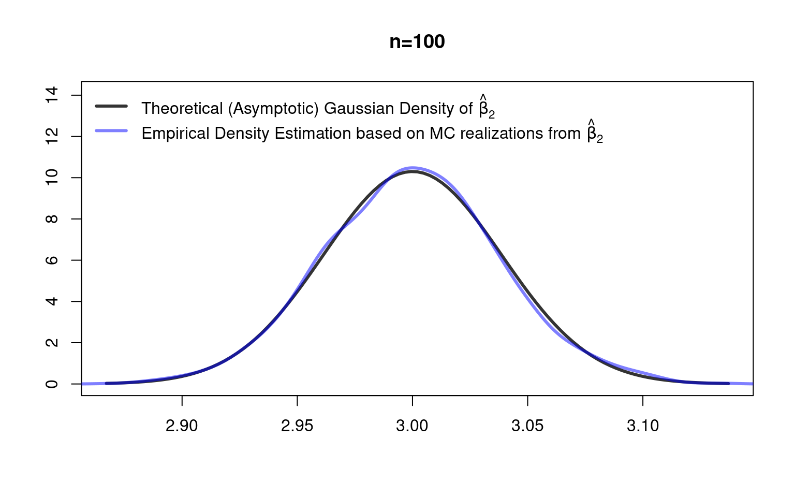
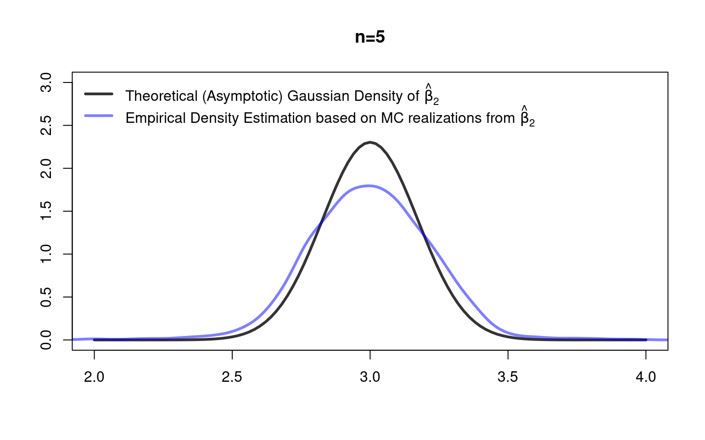

5.3 Practice: Large Sample Inference
Let’s apply the above asymptotic inference methods using . As in Chapter \(\ref{PSSI}\) we, first, program a function which allows us to generate data from the following model, i.e., from the following fully specified data generating process: \[\begin{align*} Y_i &=\beta_1+\beta_2X_{i2}+\beta_3X_{i3}+\eps_i,\qquad i=1,\dots,n\\ \beta &=(\beta_1,\beta_2,\beta_3)'=(2,3,4)'\\ X_{i2}&\sim U[-4,4]\\ X_{i3}&\sim U[-5,5]\\ \eps_i|X_i&\sim U[-0.5 |X_{i2}|, 0.5 |X_{i2}|], \end{align*}\] where \((Y_i,X_i)\) is assumed i.i.d. across \(i=1,\dots,n\) with \(X_{i2}\) and \(X_{i3}\) being independent of each other. Note that, by contrast to Chapter \(\ref{PSSI}\), the error terms are conditionally heteroscedastic (\(\V(\eps_i|X_i)=\frac{1}{12}X_{i2}^2\)) and not Gaussian.
As a side note: The unconditional variance follows by the law of total variance and is given by \(\V(\eps_i)=E(\V(\eps_i|X_i))+\V(E(\eps_i|X_i))=E(\frac{1}{12}X_{i2}^2)+0=\frac{1}{(12)}(\frac{1}{(12)}(4-(-4))^2)=\frac{4}{9}\)).
Moreover, by contrast to Chapter \(\ref{PSSI}\), we here do not need to sample new realizations of \(Y_1,\dots,Y_n\) conditionally on a given data matrix \(X\) since the asymptotic normality statement is not conditionally on \(X\). (The small sample normality result in (??) in Chapter \(\ref{PSSI}\) is conditionally on \(X\); however, the large sample normality result in (??) is unconditional on \(X\).) Therefore, the option to condition on \(X\) is here removed from the -function .
## Function to generate artificial data
myDataGenerator <- function(n, beta){
##
X <- cbind(rep(1, n),
runif(n, -4, 4),
runif(n, -5, 5))
##
eps <- runif(n, -.5 * abs(X[,2]), +.5 * abs(X[,2]))
Y <- X %*% beta + eps
data <- data.frame("Y"=Y,
"X_1"=X[,1], "X_2"=X[,2], "X_3"=X[,3])
##
return(data)
}5.3.1 Normally Distributed \(\hat\beta\) for \(n\to\infty\)
The above data generating process fulfills our regulatory assumptions Assumption 1\(^*\), 2, 3\(^*\), and 4. So, by theory, the estimators \(\hat\beta_k\) should be normal distributed for large sample sizes \(n\) – unconditionally on \(X\) and even for heteroscedastic error terms. \[ \sqrt{n}\left(\hat\beta_k-\beta_k\right)\to_d\mathcal{N}\left(0,\left[\Sigma_{X'X}^{-1}E(\eps^2_iX_iX_i')\Sigma_{X'X}^{-1}\right]_{kk}\right) \] Or: \[ \hat\beta_k\to_d\mathcal{N}\left(\beta_k, \;n^{-1}\;\left[\Sigma_{X'X}^{-1}E(\eps^2_iX_iX_i')\Sigma_{X'X}^{-1}\right]_{kk}\right) \] Note: Mathematically, the latter is a bit sloppy since the right hand side of \(\to_d\) depends on \(n\), i.e., is not the stable limit object for \(n\to\infty\). However, this sloppiness is nevertheless instructive since it gives us the approximative distribution for given largish sample sizes like \(n=100\).
For our above specified data generating process, we haveNote: For \(X\sim U[a,b]\) you can use that \(E(X^k)=\frac{b^{k+1}-a^{k+1}}{(k+1)(b-a)}\), \(k=1,2,\dots\); see, for instance, Wikipedia.
So, for instance, for \(\hat{\beta}_2\) we have the following theoretical large sample distribution: \[ \hat\beta_2\to_d\mathcal{N}\left(\beta_2, \;n^{-1}\;\left[\left(\begin{matrix}1&0&0\\0&\frac{16}{3}&0\\0&0&\frac{25}{3}\end{matrix}\right)^{-1}\left(\begin{matrix}\frac{4}{9}&0&0\\0&\frac{64}{15}&0\\0&0&\frac{100}{27}\end{matrix}\right)\left(\begin{matrix}1&0&0\\0&\frac{16}{3}&0\\0&0&\frac{25}{3}\end{matrix}\right)^{-1}\right]_{22}\right) \] Let’s use a Monte Carlo simulation to check how well this theoretical large sample (\(n\to\infty\)) distribution of \(\hat\beta_2\) works as an approximative distribution for a largish sample size of \(n=100\).
set.seed(123)
n <- 100 # a largish sample size
beta_true <- c(2,3,4) # true data vector
## Mean and variance of the true asymptotic
## normal distribution of beta_hat_2:
# true mean
beta_true_2 <- beta_true[2]
# true variance
var_true_beta_2 <- (solve(diag(c(1, 16/3, 25/3))) %*%
diag(c(4/9, 64/15, 100/27))%*%
solve(diag(c(1, 16/3, 25/3))))[2,2]/n
## Let's generate 5000 realizations from beta_hat_2, and check
## whether their distribution is close to the true normal
## distribution.
## (We don't condition on X since the theoretical limit
## distribution is unconditional on X)
rep <- 5000 # MC replications
beta_hat_2 <- rep(NA, times=rep)
##
for(r in 1:rep){
MC_data <- myDataGenerator(n = n,
beta = beta_true)
lm_obj <- lm(Y ~ X_2 + X_3, data = MC_data)
beta_hat_2[r] <- coef(lm_obj)[2]
}
## Compare:
## True beta_2 versus average of beta_hat_2 estimates
beta_true_2
#> [1] 3
round(mean(beta_hat_2), 3)
#> [1] 3
## True variance of beta_hat_2 versus
## empirical variance of beta_hat_2 estimates
round(var_true_beta_2, 5)
#> [1] 0.0015
round(var(beta_hat_2), 5)
#> [1] 0.00147
## True normal distribution of beta_hat_2 versus
## empirical density of beta_hat_2 estimates
library("scales")
curve(expr = dnorm(x, mean = beta_true_2,
sd=sqrt(var_true_beta_2)),
xlab="",ylab="", col=gray(.2), lwd=3, lty=1,
xlim=range(beta_hat_2),ylim=c(0,14.1),main=paste0("n=",n))
lines(density(beta_hat_2, bw = bw.SJ(beta_hat_2)),
col=alpha("blue",.5), lwd=3)
legend("topleft", lty=c(1,1), lwd=c(3,3),
col=c(gray(.2), alpha("blue",.5)), bty="n", legend=
c(expression(
"Theoretical (Asymptotic) Gaussian Density of"~hat(beta)[2]),
expression(
"Empirical Density Estimation based on MC realizations from"~
hat(beta)[2]))) Great! The nonparametric density estimation (estimated via ) computed from the simulated realizations of \(\hat\beta_2\) is indicating that \(\hat\beta_2\) is really normally distributed as described by our theoretical result in Theorem \(\ref{OLSnormality1}\) (homoscedastic case) and in Equation \(\eqref{OLSnormality1Rob}\) (heteroscedastic case).
However, is the asymptotic distribution of \(\hat\beta_2\) also usable for (very) small samples like \(n=5\)? Let’s check that:
set.seed(123)
n <- 5 # a small sample size
beta_true <- c(2,3,4) # true data vector
## Mean and variance of the true asymptotic
## normal distribution of beta_hat_2:
# true mean
beta_true_2 <- beta_true[2]
# true variance
var_true_beta_2 <- (solve(diag(c(1, 16/3, 25/3)))%*%
diag(c(4/9, 64/15, 100/27))%*%
solve(diag(c(1, 16/3, 25/3))))[2,2]/n
## Let's generate 5000 realizations from beta_hat_2, and check
## whether their distribution is close to the true normal
## distribution.
## (We don't condition on X since the theoretical limit
## distribution is unconditional on X)
rep <- 5000 # MC replications
beta_hat_2 <- rep(NA, times=rep)
##
for(r in 1:rep){
MC_data <- myDataGenerator(n = n,
beta = beta_true)
lm_obj <- lm(Y ~ X_2 + X_3, data = MC_data)
beta_hat_2[r] <- coef(lm_obj)[2]
}
## Compare:
## True beta_2 versus average of beta_hat_2 estimates
beta_true_2
#> [1] 3
round(mean(beta_hat_2), 3)
#> [1] 2.996
## True variance of beta_hat_2 versus
## empirical variance of beta_hat_2 estimates
round(var_true_beta_2, 5)
#> [1] 0.03
round(var(beta_hat_2), 5)
#> [1] 0.05621
## True normal distribution of beta_hat_2 versus
## empirical density of beta_hat_2 estimates
library("scales")
curve(expr = dnorm(x, mean = beta_true_2,
sd=sqrt(var_true_beta_2)),
xlab="",ylab="", col=gray(.2), lwd=3, lty=1,
xlim=c(2,4), ylim=c(0,3),main=paste0("n=",n))
lines(density(beta_hat_2, bw = bw.SJ(beta_hat_2)),
col=alpha("blue",.5), lwd=3)
legend("topleft", lty=c(1,1), lwd=c(3,3),
col=c(gray(.2), alpha("blue",.5)), bty="n", legend=
c(expression(
"Theoretical (Asymptotic) Gaussian Density of"~hat(beta)[2]),
expression(
"Empirical Density Estimation based on MC realizations from"~
hat(beta)[2]))) Not good. The actual distribution has substantially fatter tails. That is, if we would use the quantiles of the asymptotic distribution, we would falsely reject the null-hypothesis too often (probability of type I errors would be larger than the significance level). But asymptotic are kicking in pretty fast here: things become much more reliable already for \(n=10\).
5.3.2 Testing Multiple and Single Parameters
In the following, we do inference about multiple parameters. We test \[\begin{align*} H_0:&\beta_2=3\quad\text{and}\quad\beta_3=5\\ \text{versus}\quad H_A:&\beta_2\neq 3\quad\text{and/or}\quad\beta_3\neq 5. \end{align*}\] Or equivalently \[\begin{align*} H_0:&R\beta -r = 0 \\ H_A:&R\beta -r \neq 0, \end{align*}\] where \[ R=\left( \begin{matrix} 0&1&0\\ 0&0&1\\ \end{matrix}\right)\quad\text{ and }\quad r=\left(\begin{matrix}3\\5\\\end{matrix}\right). \] The following \(\textsf{R}\) code can be used to test this hypothesis:
suppressMessages(library("car")) # for linearHyothesis()
# ?linearHypothesis
library("sandwich")
## Generate data
MC_data <- myDataGenerator(n = 100,
beta = beta_true)
## Estimate the linear regression model parameters
lm_obj <- lm(Y ~ X_2 + X_3, data = MC_data)
vcovHC3_mat <- sandwich::vcovHC(lm_obj, type="HC3")
## Option 1:
car::linearHypothesis(model = lm_obj,
hypothesis.matrix = c("X_2=3", "X_3=5"),
vcov=vcovHC3_mat)
#> Linear hypothesis test
#>
#> Hypothesis:
#> X_2 = 3
#> X_3 = 5
#>
#> Model 1: restricted model
#> Model 2: Y ~ X_2 + X_3
#>
#> Note: Coefficient covariance matrix supplied.
#>
#> Res.Df Df F Pr(>F)
#> 1 99
#> 2 97 2 1150.4 < 2.2e-16 ***
#> ---
#> Signif. codes: 0 '***' 0.001 '**' 0.01 '*' 0.05 '.' 0.1 ' ' 1
## Option 2:
R <- rbind(c(0,1,0),
c(0,0,1))
car::linearHypothesis(model = lm_obj,
hypothesis.matrix = R,
rhs = c(3,5),
vcov=vcovHC3_mat)
#> Linear hypothesis test
#>
#> Hypothesis:
#> X_2 = 3
#> X_3 = 5
#>
#> Model 1: restricted model
#> Model 2: Y ~ X_2 + X_3
#>
#> Note: Coefficient covariance matrix supplied.
#>
#> Res.Df Df F Pr(>F)
#> 1 99
#> 2 97 2 1150.4 < 2.2e-16 ***
#> ---
#> Signif. codes: 0 '***' 0.001 '**' 0.01 '*' 0.05 '.' 0.1 ' ' 1The \(p\)-value is very small and allows us to reject the (false) null-hypothesis at any of the usual significance levels.
Next, we do inference about a single parameter. We test \[\begin{align*} H_0:&\beta_3=5\\ \text{versus}\quad H_A:&\beta_3\neq 5. \end{align*}\]
# Load libraries
library("lmtest") # for coeftest()
library("sandwich") # for vcovHC()
## Generate data
n <- 100
MC_data <- myDataGenerator(n = n,
beta = beta_true)
## Estimate the linear regression model parameters
lm_obj <- lm(Y ~ X_2 + X_3, data = MC_data)
## Robust t test
## Robust standard error for \hat{\beta}_3:
SE_rob <- sqrt(vcovHC(lm_obj, type = "HC3")[3,3])
## hypothetical (H0) value of \beta_3:
beta_3_H0 <- 5
## estimate for beta_3:
beta_3_hat <- coef(lm_obj)[3]
## robust t-test statistic
t_test_stat <- (beta_3_hat - beta_3_H0)/SE_rob
## p-value
K <- length(coef(lm_obj))
##
p_value <- 2 * min( pt(q = t_test_stat, df = n - K),
1- pt(q = t_test_stat, df = n - K))
p_value
#> [1] 4.330845e-65Again, the \(p\)-value is very small and allows us to reject the (false) null-hypothesis at any of the usual significance levels.